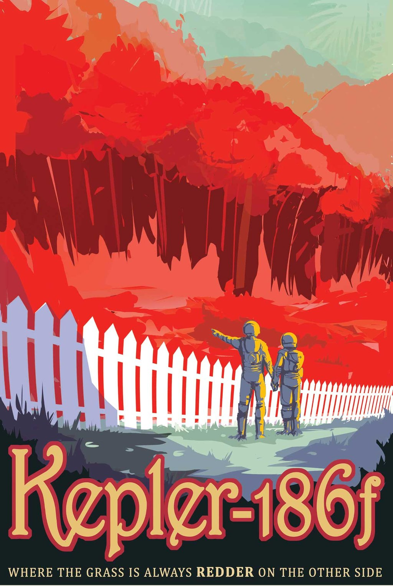

Kepler-186f is the first Earth-size planet discovered in the potentially 'habitable zone' around another star, where liquid water could exist on the planet's surface. Its star is much cooler and redder than our Sun. If plant life does exist on a planet like Kepler-186f, its photosynthesis could have been influenced by the star's red-wavelength photons, making for a color palette that's very different than the greens on Earth. This discovery was made by Kepler, NASA's planet hunting telescope